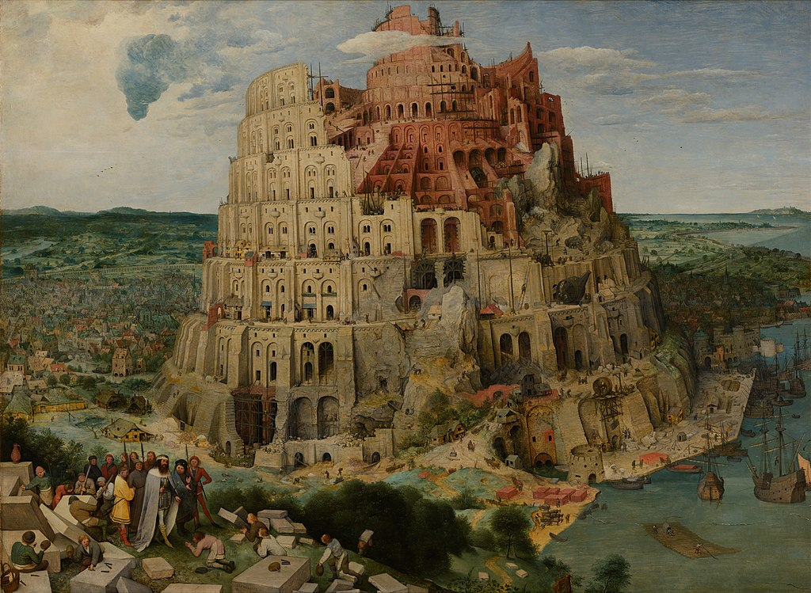

<head>
<meta charset="UTF-8" />
<meta name="keywords" content="drawing, painting" />
<meta name="description" content="drawings by Sunjy" />
<title>Sunjy</title>
<link rel="shortcut icon" type="image/x-icon" href="../../mImages/mCommon/favicon.ico" media="screen" />
<link rel="stylesheet" type="text/css" href="../../mCsses/mCommon/mCssA.css" />
<link rel="stylesheet" type="text/css" href="../../mCsses/mCommon/mCssB.css" />
<link rel="stylesheet" type="text/css" href="../../mCsses/mCommon/mCssC.css" />
<link rel="stylesheet" type="text/css" href="../../mCsses/mCommon/mCssD.css" />
<link rel="stylesheet" type="text/css" href="../../mCsses/mContent/mCssA.css" />
<link rel="stylesheet" type="text/css" href="../../mCsses/mContent/mCssB.css" />
<link rel="stylesheet" type="text/css" href="../../mCsses/mContent/mCssC.css" />
<link rel="stylesheet" type="text/css" href="../../mCsses/mContent/mCssD.css" />
</head>
<script type="text/javascript" src="../../mScripts/mContent/mContentAA.js" /></script>
<script type="text/javascript" src="../../mScripts/mContent/mContentAB.js" /></script>
<script type="text/javascript" src="../../mScripts/mContent/mContentAC.js" /></script>
<script type="text/javascript" src="../../mScripts/mContent/mContentAD.js" /></script>
<script type="text/javascript"></script> 
<script type="text/javascript">
document.write('<div class="mImgAbsolute"></div>');
/*
document.write('<p class="mFontSizeBColor" />From a white paper...</p>');
document.write('<table class="center"><tr><td>');
document.write('');
document.write('</td></tr></table>');
*/
</script>


<script type="text/javascript">
document.write('<p class="mFontSizeBColor" />The Tower of Babel</p>');
document.write('<p class="mFontSizeSColor" />“The Tower of Babel” by Pieter Bruegel, the Elder, depicts the construction of the Tower of Babel. Bruegel’s depiction of the architecture of the tower, with its numerous arches and examples of Roman engineering, is reminiscent of a larger and taller Roman Colosseum.<br><br>Bruegel had visited Rome in 1552–1553 and had studied the Roman ruins. At first glance, the tower appears to be a steady series of concentric pillars. However, none of the layers lies at a true horizontal. The tower is built as an ascending spiral.<br><br>Christians of the time of this painting saw the Roman Colosseum as a symbol of hubris and persecution. The parallels between Rome and Babylon had a significance for Bruegel’s audience.<br><br>Rome was the Eternal City, intended to last forever, and its decay and ruin were taken to symbolize the vanity and transience of earthly efforts. <br><br>The Tower of Babel was also symbolic of the religious turmoil between the Catholic church and the Protestant religion. The Protestant denomination was growing in strength in the Netherlands.<br><br>The Tower of Babel is a Near Eastern origination story recorded in Genesis. It is meant to explain the origin of different languages.<br><br>According to the story, united humanity that had developed after the Great Flood and speaking a single language agreed to build a city and a tower “tall enough to reach heaven.”<br><br>“Then they said, ‘Come, let us build ourselves a city, and a tower with its top in the heavens, and let us make a name for ourselves’…” (Genesis 11:4).<br><br>This arrogance angered God, and he confused their speech so that they could no longer understand each other and scattered them around the world.<br><br>The Tower of Babel was the subject of three paintings by Pieter Bruegel, the Elder. The two surviving pictures, often distinguished by the prefix “Great” and “Little,” are in the Kunsthistorisches Museum, Vienna, and the Museum Boijmans Van Beuningen in Rotterdam.<br><br>The painter of this masterpiece, Pieter Bruegel, is called “the Elder” to distinguish him from the many later painters in his family, including his son Pieter Brueghel the Younger (1564-1638).<br><br>Pieter Bruegel, the Elder, dropped the ‘h’ from his name and signed his paintings as Bruegel from 1559 onwards. Many of Pieter Bruegel the Elder’s paintings can be found in museums across the world depict highly detailed images of life during his time.<br><br>The Tower of Babel paintings has been replicated in popular culture, especially in video or PC games, as art design or background features or map modes.<br><br>Why is that? Some of these modern games point to a future where our current civilization, intended to last forever, is destined for decay and ruin.<br></p>');
document.write('<table class="center" /><tr><td>');
document.write('<br>Bruegel had visited Rome in 1552–1553 and had studied the Roman ruins. At first glance, the tower appears to be a steady series of concentric pillars. However, none of the layers lies at a true horizontal. The tower is built as an ascending spiral.<br><br>Christians of the time of this painting saw the Roman Colosseum as a symbol of hubris and persecution. The parallels between Rome and Babylon had a significance for Bruegel’s audience.<br><br>Rome was the Eternal City, intended to last forever, and its decay and ruin were taken to symbolize the vanity and transience of earthly efforts. <br><br>The Tower of Babel was also symbolic of the religious turmoil between the Catholic church and the Protestant religion. The Protestant denomination was growing in strength in the Netherlands.<br><br>The Tower of Babel is a Near Eastern origination story recorded in Genesis. It is meant to explain the origin of different languages.<br><br>According to the story, united humanity that had developed after the Great Flood and speaking a single language agreed to build a city and a tower “tall enough to reach heaven.”<br><br>“Then they said, ‘Come, let us build ourselves a city, and a tower with its top in the heavens, and let us make a name for ourselves’…” (Genesis 11:4).<br><br>This arrogance angered God, and he confused their speech so that they could no longer understand each other and scattered them around the world.<br><br>The Tower of Babel was the subject of three paintings by Pieter Bruegel, the Elder. The two surviving pictures, often distinguished by the prefix “Great” and “Little,” are in the Kunsthistorisches Museum, Vienna, and the Museum Boijmans Van Beuningen in Rotterdam.<br><br>The painter of this masterpiece, Pieter Bruegel, is called “the Elder” to distinguish him from the many later painters in his family, including his son Pieter Brueghel the Younger (1564-1638).<br><br>Pieter Bruegel, the Elder, dropped the ‘h’ from his name and signed his paintings as Bruegel from 1559 onwards. Many of Pieter Bruegel the Elder’s paintings can be found in museums across the world depict highly detailed images of life during his time.<br><br>The Tower of Babel paintings has been replicated in popular culture, especially in video or PC games, as art design or background features or map modes.<br><br>Why is that? Some of these modern games point to a future where our current civilization, intended to last forever, is destined for decay and ruin.<br>" />');
document.write('</td></tr></table>');
</script>


